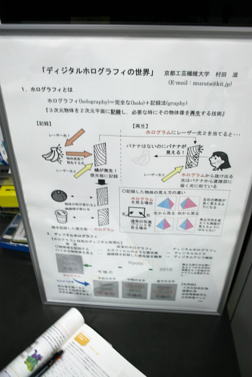
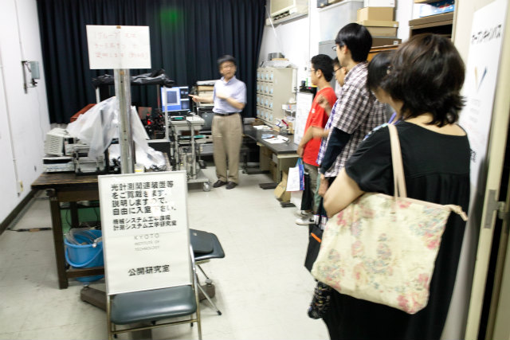
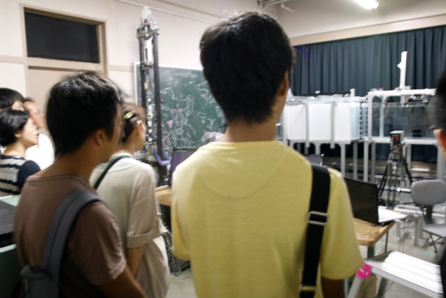
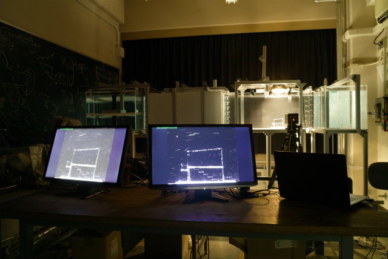
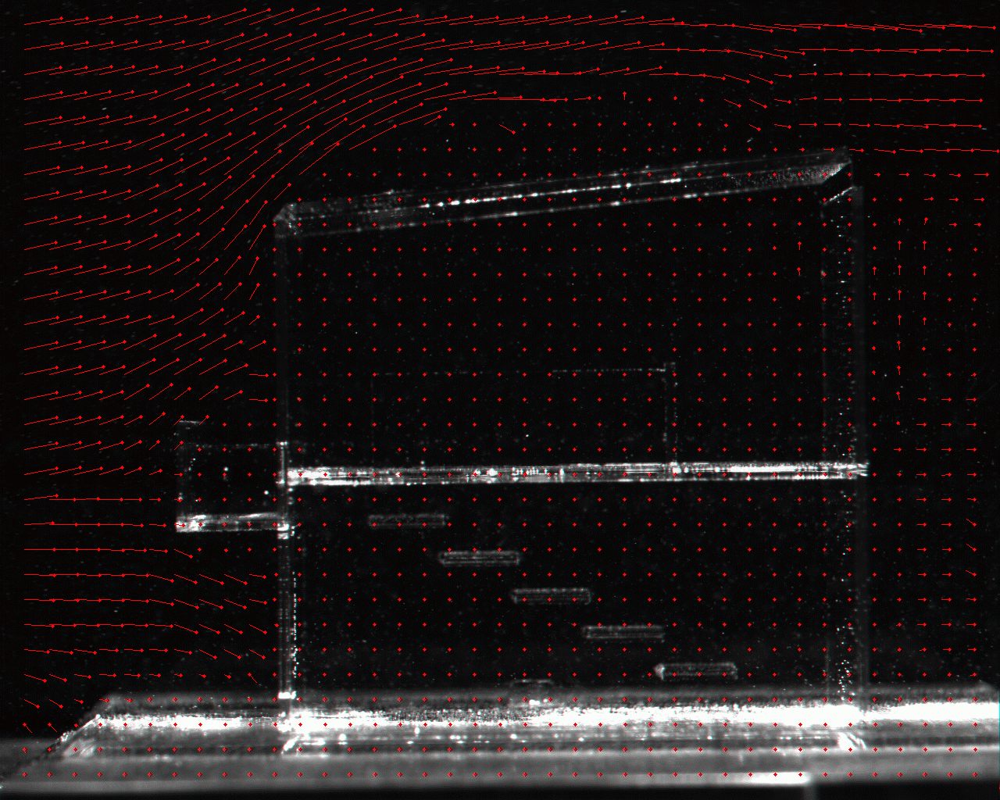
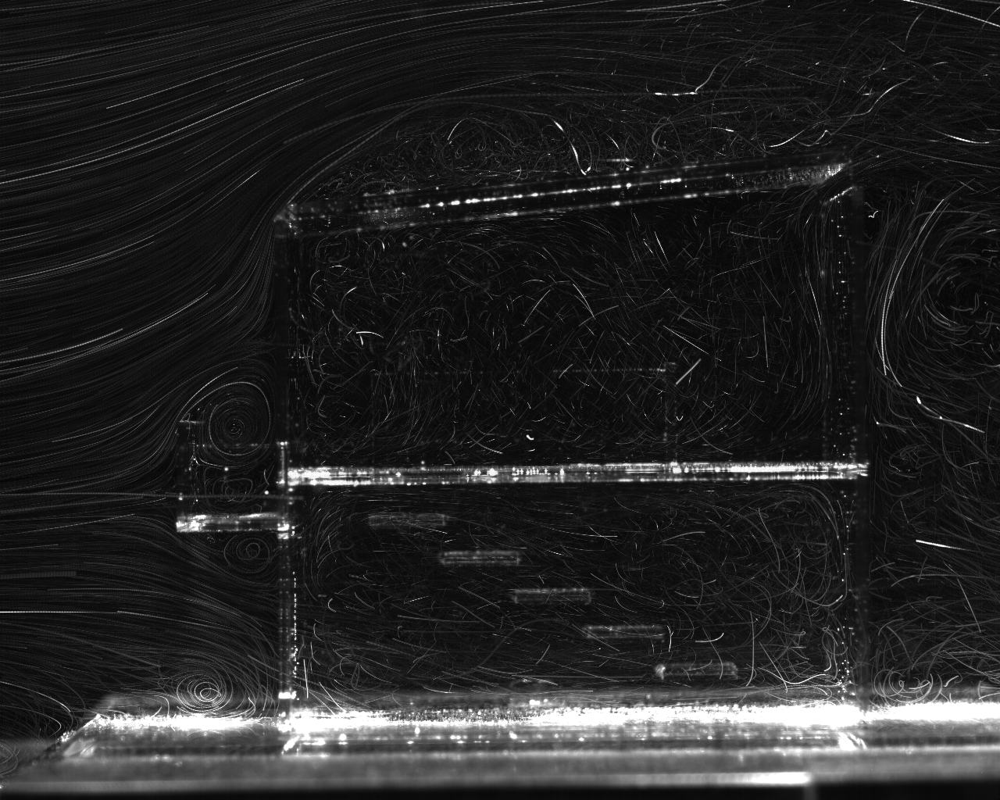

| ・平成25年度オープンキャンパス (H25.08.09-10) | |||
去年よりまた参加者が増えています。混雑解消ということで、今年は村田先生と助教の人で2部屋実験室公開を実施しました。容量を増やして対応していかないとしんどくなって来ますね。 |
|||
|

村田先生はホログラフィ |

参加人数が多くて説明が大変です | ||
|

助教の人はPIVと可視化 |

遅いノートPCで撮影、PIV、マルチディスプレイ表示のコンボ | ||
|

アクリル住宅模型の流れ場をPIV計測 |

100枚の連続画像の粒子径路 | ||